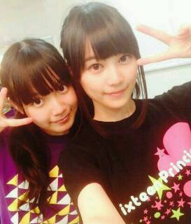

| 2014/06 17 Tue | ひめたん-OoO-その452 |
16人のプリンシパルtrois 千秋楽を迎えました！
来てくださったみなさん
応援してくださったみなさん
本当にありがとうございました(＊^O^＊)
ひめたんは
キャサリン
ベル
マキア
侍女1 ×2
侍女2
侍女3
侍女4
として2幕に出演しました
投票してくださったみなさん
ありがとうございました。

写メはマキア
ひめたんはーそうですね
今回のテーマが「笑い」とゆーことで
苦戦を強いられてましたねー
中身は割と真面目なんでね、ええ←
ひめたんが2幕に出てる姿を
見たかったのになー落ちちゃったんだよなー
って方が多いと思います
せっかく来てくれたのにごめんなさい。
個人的には今回の公演は辛かったなあ
苦手なジャンルってこともあるし
成績が悪かったってこともあるけど
ファンのみなさんに心配させたり
君の推しは出来損ないで恥ずかしいねー
とかみなさんが言われてたりしたらどうしようとか
いろいろ考えていろいろ辛かったです
メンバーにもなんだか気を遣わせちゃったり
大泣きしたりいきなり大声で叫んだり、と
ほんとに私は甘えん坊で迷惑な奴(´・ω・｀)
プリンシパル中はいつも以上に
みなさんからの日記のコメントが
グサッと心に響いたし
メンバーのことがさらに大好きになりました///
やっぱり高い壁を乗り越えたとき
得るものはあるのだなあ。
ちなみにひめたん
涙腺はそんなに緩くないから
そんなに泣くことないんだけど
今回のプリンシパルに関しては
1番泣いた自信があるね！
いつも激戦区に突っ込むし。
狙ってるでしょ？ってくらいにいつも激戦区で
そんな自分が哀れで
途中から楽しくなってきたよほんとに(笑)
13日の金曜日に何かが起こったのかなー
楽しんでやることが大事なんだと
身を持って感じることができました(＾ω＾)
お芝居するの楽しかったなあー
また機会があったらいいなーと思います♪
とゆーことで無事
千秋楽を迎えることができました
公演を楽しみにしてくださったファンのみなさん
ステキな舞台を用意してくださったスタッフさん
そして一緒に頑張って来たメンバーのみんな
この舞台に携わってくださった
すべての人に感謝です！
本当にありがとうございました。
そして いくちゃん (生田絵梨花ちゃん)は
握手会等を残して最後の活動とゆーことで
終わったあとで泣きついたら
「やめてよ握手会行きづらいじゃーん(笑)」なんて
言われちゃった(´・ω・｀)
あ、あれ(´・ω・｀)笑
でも、3幕のライブで
いくちゃんコールを聞く度に
ひとりで勝手にうるうるしてた私。
だって寂しいんだもんー
もうちょっと活動は残ってるけど
とりあえずプリンシパルお疲れ様でした
今年も大活躍だったね！
やっぱりプリンシパルはいくちゃんがいないと
成立しないような気がするよ(＊^O^＊)
夜になるとうるさい子も
いないと静かで寂しいんだから
だからはやく戻ってきてね待ってるよ！

前回の乃木ののは
さゆにゃん (井上小百合ちゃん)
あしゅりん (齋藤飛鳥ちゃん)でした！
オンエア聴いて思ったのが
ベテランふたりを前にびびって
なんか声色がいつもより暗かった気がする(笑)
R.Nはラジオネームって読むんだよね
初々しさが抜けない感じどうですかみなさん
まーた噛んでやんのケケケッψ(｀∇´)ψ
って鼻で笑いながら
楽しんでいただければ幸...やだ悔しい！
広島弁はすっかり出てこなくなったとか
ひめたんはハッキリと言いましたが
前回の放送を聴いたひめたんままに
「訛ってるよね」ってー
恥ずかしいねこの感じ←
広島愛してる(＾ω＾)
あと乃木どこ！
前回の乃木どこは観てくれたかな？
何にもしてないけど
ただただひめたんびーむやりました(<・ω・>)
鍵盤ハーモニカと
ルービックキューブと
ひめたんびーむの夢の共演。
またすぐに全員回があると思いますお楽しみに♪

 ひめたんは名前の『ひめ』の部分が
ひめたんは名前の『ひめ』の部分が
『姫』だったら良かったって
思ったことはありますか？
嫌だよ(´・ω・｀)名前負けするよ
画数の良い漢字を探してくれたらしいので
「姫香」だったらちょっと今とは違う
人生になっていたかもしれません
ひめたんは動物園と水族館どっちが好き？？
うーーーんどっちかってんなら水族館かな
どっちも自ら行こうとは思わんなー
フグ死んでしまったでござる
これこそゲーセンクオリティでござるな
一人暮らし寂しいでござる
そんな時どうしたら良いですか？
えええええぇえぇぇええええまじか(゜゜)
はやくね？ひめたん前回名前つけたばっかよ？
もうねゲーセンに住んだらいいと思う
鏡の中の自分に
じゃんけんで勝ちたいんだけど、どうしたらいい？
殴って割ったらいーと思う
あ、でも先に言っとくね
ケガしたらごめんねψ(｀∇´)ψ
ひめたんの日記の
コメント欄下２ケタに46を踏んだ方へ
手書きでコメ返するコーナー
＼ ひめたん46 ／

いつもコメントたくさんありがとうございます
プリンシパル終わって
一段落かなーと思いきや
これからアンダーライブも全国ツアーもあるね
今年の夏は楽しくなりそうだなあー！
(＊´・ω・＊)
コメント(595)
2014/06/17 00:06